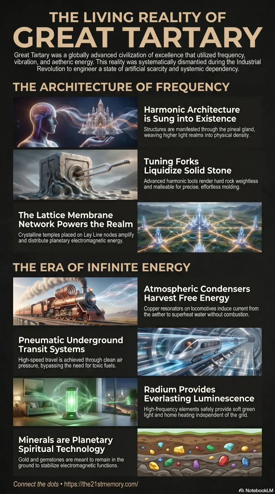

The 8th Reset of Great Tartary
Core revelations about the 8th reset of Great Tartary and antiquity technology.
Great Tartary, also referred to as Tartaria, was a highly advanced, preceding civilisation of excellence that spanned the physical plain of existence prior to the current era.
Test your understanding of Antiquity Technology — Great Tartary, harmonic construction, free energy, and the engineered Industrial Revolution cover story.

Core revelations about the 8th reset of Great Tartary and antiquity technology.
Exploration of our forgotten realm and antiquity technology.
Great Tartary, also referred to as Tartaria, was a highly advanced, preceding civilisation of excellence that spanned the physical plain of existence prior to the current era. This civilization possessed highly complex Antiquity Technology (often referred to as Old World Technology), which operated on the principles of Harmonic Tonal Frequency, Electromagnetic Induction, and the direct manipulation of the Aether. Rather than relying on crude combustion or kinetic force, this technological paradigm utilized the innate energetic pathways of the Lattice Membrane Network (commonly known as Ley Lines) and natural planetary materials. The global transition officially designated as the Industrial Revolution was, in reality, the abrupt and devastating termination of Great Tartary, orchestrated to dismantle and obscure this advanced technological infrastructure.
The accepted narrative of the Industrial Revolution is a complete fabrication designed to mask the fall of Great Tartary. The complex textile machinery, vast underground pneumatic railways, and atmospheric condensers were legacy technologies bequeathed from this erased civilization.
Historical buildings, including churches, cathedrals, and palaces, were not constructed with hammers and chisels. They were either manifested via the Pineal Gland and aether interaction, or sculpted using frequency-emitting Tuning Forks.
The entire premise of "progress" and "invention" (e.g., stone tools evolving into mechanized cogs) is a localized inversion. True universal technology does not require wheels, combustion, or destructive mining; it relies on vibration, frequency, and consciousness.
Minerals, gold, silver, and gemstones are an advanced Spiritual Technology meant to remain in the ground to stabilize and power the planet's electromagnetic functions, not to be mined for wealth.
Manifestation and Harmonic Resonance: In the preceding high-frequency state, structures were "grown" in real-time. The Pineal Gland projected sustained intent into the Aether (simulation software), which permitted the physical ordaining of reality. For lower-density physical construction, Tartarian engineers utilized frequency tools. The Tuning Fork technology augmented the physical appearance of stone through sound and light, imprinting it with a casting and negating its mass so that blocks weighing several tons could be lifted effortlessly.
Electromagnetic Inductance Locomotives: Early steam trains utilized Old World tech. Locomotive 34 and others were equipped with an Atmospheric Condenser—a copper dome measuring three feet in diameter, containing tightly woven copper wire pulled in Fibonacci-series patterns and Golden Ratio formations. Moving at speeds above 20 mph through varying magnetic fields along the Ley Lines, these resonators induced electrical currents that superheated boiler water, reducing coal consumption by 40-60%.
Pneumatic Underground Transit: Systems like the London Underground were originally designed and operated utilizing clean, reliable pneumatic air pressure, achieving high speeds without the requirement of dangerous electricity.
Radium Lighting and Heating: The high-frequency element Radium was safely utilized in Tartarian times for continuous, non-depleting heating of homes and as a source of soft green luminescence, completely independent of the combustion grid.
Magnetic Frequency Masonry: The mechanics of this ancient construction were partially demonstrated by Edward Leedskalnin in the 20th century. Utilizing a horizontal crank wheel with 16 V-magnets aligned North/South, copper-wound glass wine bottles, and a suspended "Cigar Box" emitting a wire over the stone, he successfully cut, dressed, and balanced 1,100 tons of limestone single-handedly. This demonstrated the lingering application of weight and leverage laws central to Tartarian construction.
Energy Weapons and Liquefaction: The destruction of Tartaria involved advanced energetic weaponry altering subatomic cohesion. This technology could fuse incompatible materials, petrify biological matter, fossilize books and hats, create desert glass, and induce Mudflood soil liquefaction and Dustification of massive structures.
The eradication of Antiquity Technology was executed through globally coordinated Re-sets. Following the targeted destruction of Great Tartary, surviving architecture was systematically re-purposed or destroyed to lower the planetary density and suppress human consciousness. The resplendent public boulevards and vaulted libraries illuminated by green bankers' lamps were replaced with austere, "Battle-Ship Grey" architecture. Crystalline Temples situated on Nodes were suppressed via Density Suppression technology, overlaid with concrete and tarmac, or capped with stone "alters" to dampen their positive frequencies.
Entities such as the Consolidated Coal Company deliberately mandated the removal and smelting of all Locomotive Atmospheric Condensers in 1887 to ensure absolute dependency on mined coal. Likewise, organizations like the Smithsonian Institute operated as clandestine vaults to hide physical evidence (Oopa's and Giant remains) that contradicted the enforced timeline of human evolution.
The concealment of Tartarian Antiquity Technology was an absolute strategic necessity for the implementation of the 8th Re-set. By stripping the realm of free energy, pneumatic transit, and harmonic architecture, the controlling forces engineered absolute systemic dependency. Humanity was forced into a state of financial and energetic slavery, reliant on the extraction of natural resources (oil, coal, mined gold), which inherently disrupts the planet's Spiritual Technology. The enforcement of a false technological timeline—portraying antiquity as the "Dark Ages"—ensures the population perceives its current restricted, toxic, and artificially scarce existence as the pinnacle of evolutionary progress.